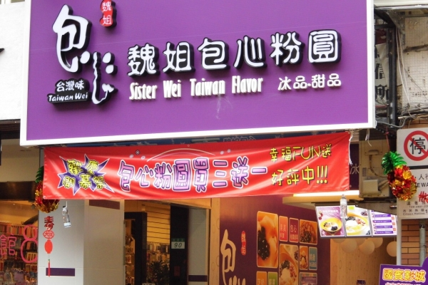
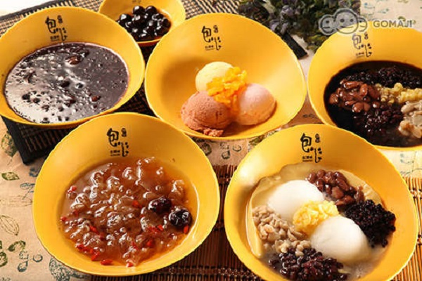
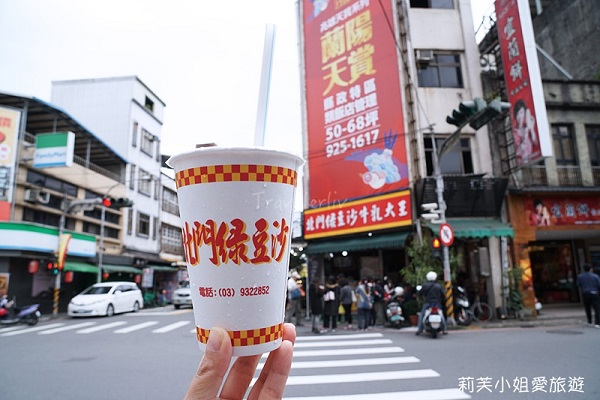
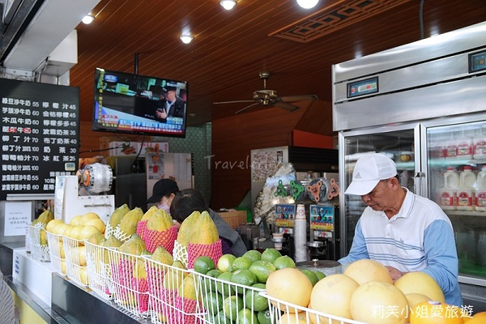
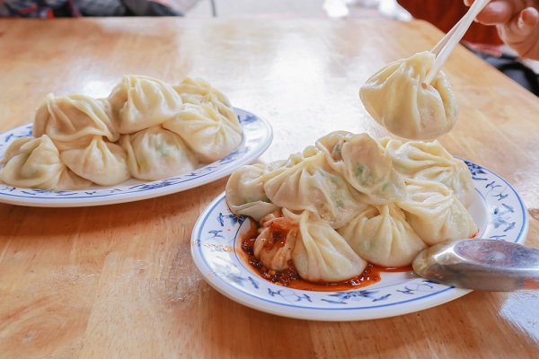

[食記] 宜蘭小吃
宜蘭3大必吃美食大公開！
來宜蘭旅遊有哪些美食不能錯過？
宜蘭有哪些推薦小吃？
編輯精選宜蘭12大最知名必吃美食，
甜的鹹的通通有，趕快規劃來一趟宜蘭美食之旅吧！
Top1:魏姐包心粉圓
 
包心粉圓是宜蘭在地的特色甜點小食，
是將萬丹紅豆包在粉圓裡頭，打造獨特的美味與口感。
包心粉圓也會搭配花生或雪沙冰，
多樣的口味與組合，讓包心粉圓的層次與享受更佳的多元，
遍佈宜蘭的分店也讓你在需要一份甜蜜口感時都可以吃得到。
地址 : 宜蘭縣羅東鎮羅莊街398號
電話 : 03-9606899
時間 : 08:00 – 17:00
Top2:北門綠豆沙牛乳大王
 
北門綠豆沙牛乳大王是宜蘭市區中山路上非常知名的必吃美食，
最主打的綠豆沙牛乳非常的香純濃郁，
綠豆沙打得非常的細緻綿密，許多人喝過都讚不絕口。
除了綠豆沙牛乳以外，芋頭以及木瓜牛乳也都是非常推薦的選擇！
地址：宜蘭市中山路三段208號
電話：03-932-2852
時間：週三至週六 10:00 - 17:00
Top3:正好鮮肉小籠包
